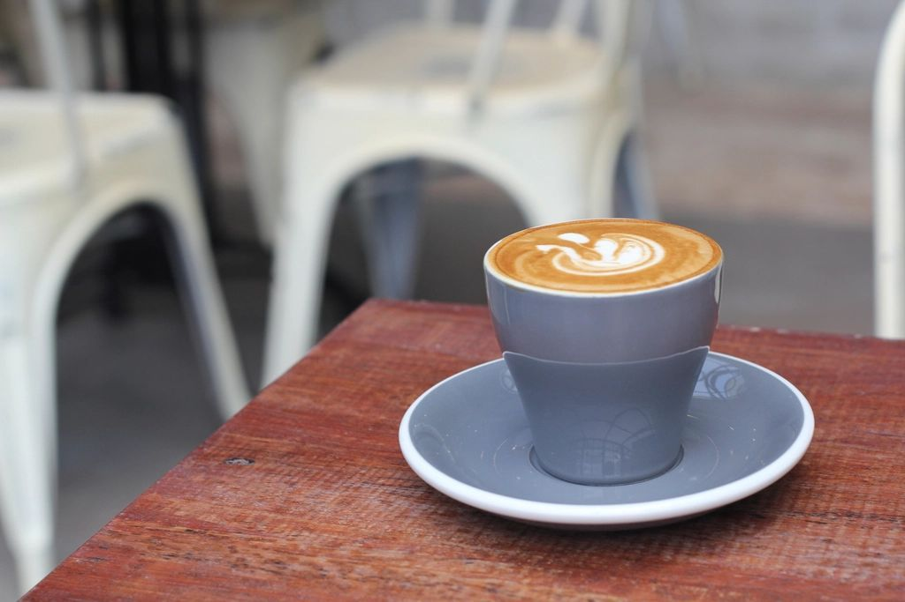
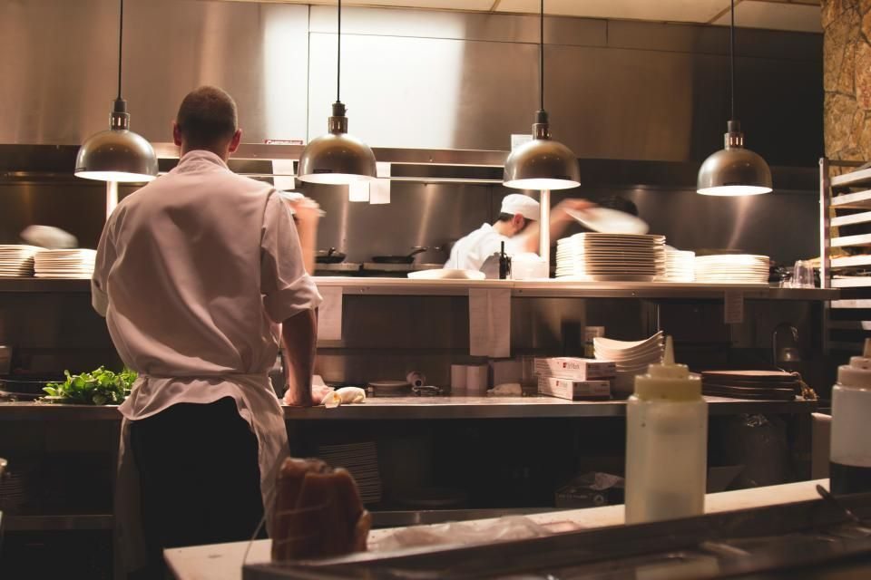
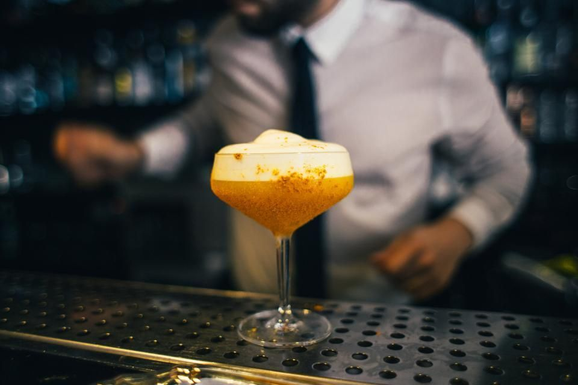

01 PASTA
毎朝、打つ。

パスタは毎朝、その日に使う分だけを打ちます。もっちりとした歯ごたえは、ソースとよくからみます。
02 VEGETABLES
野菜は、近所から。
地元の農家さんから届く野菜を、できるだけそのまま。塩とオリーブオイルで、素材の味を引き出します。(見本の文章です)
03 WINE
気軽に、ワインを。
料理に合わせて、飲みやすい一本をご案内します。迷ったら、遠慮なくお声がけください。
写真・店舗名・内容はすべて見本用の架空のものです
Trattoria Sorriso
手打ちパスタと、季節の前菜と、ワイン。
ご挨拶
カウンター6席、テーブル4卓。こぢんまりとした店で、毎朝打つ生パスタと、その日に届いた野菜を中心にお出ししています。
仕事帰りの一杯も、家族の誕生日も。気取らず、でも手は抜かずに。そんな食卓をめざしています。
おすすめ
卵とチーズだけで仕上げる、店の看板。
¥1,600
料理に合わせて、飲みやすい一杯を。
¥800〜
オリーブオイルと岩塩で、シンプルに。
¥600GALLERY



01 PASTA
パスタは毎朝、その日に使う分だけを打ちます。もっちりとした歯ごたえは、ソースとよくからみます。
02 VEGETABLES
地元の農家さんから届く野菜を、できるだけそのまま。塩とオリーブオイルで、素材の味を引き出します。(見本の文章です)
03 WINE
料理に合わせて、飲みやすい一本をご案内します。迷ったら、遠慮なくお声がけください。
VOICE
「パスタがもちもちで、ソースとの相性が抜群でした。また来たいです。」
30代・女性(イメージ例)「家族の誕生日に利用。ゆっくり過ごせて、スタッフの方も親切でした。」
40代・男性(イメージ例)「仕事帰りに一人でも入りやすい雰囲気です。グラスワインが充実しています。」
20代・女性(イメージ例)ACCESS
ご予約・お問い合わせ
000-0000-0000